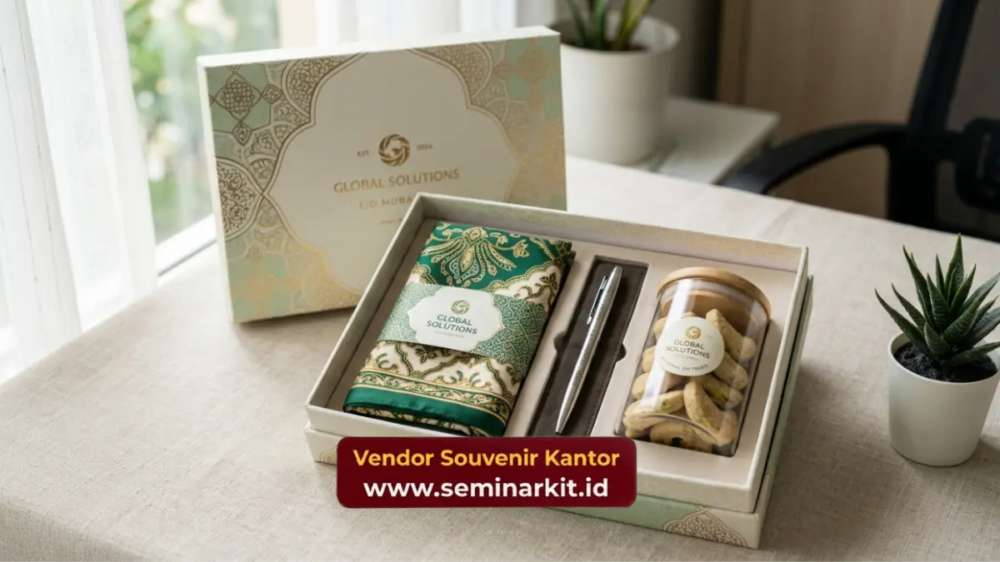

Souvenir karyawan hari raya adalah hadiah atau hampers yang diberikan perusahaan kepada karyawan menjelang momen keagamaan seperti Lebaran atau Natal, sebagai bentuk perhatian di luar tunjangan hari raya.
Pemberian ini biasanya berupa parcel makanan, perlengkapan ibadah, atau paket kombinasi dengan kemasan bertema hari raya.
Perusahaan yang ingin menyiapkan hampers karyawan berkualitas dapat langsung memesan melalui vendorsouvenirkantor.web.id.
- Souvenir karyawan hari raya melengkapi THR sebagai bentuk perhatian personal dari perusahaan kepada karyawan.
- Waktu ideal mempersiapkan hampers hari raya adalah tiga hingga empat minggu sebelum momen berlangsung.
- Jenis hampers dapat disesuaikan dengan anggaran, mulai dari paket sederhana hingga hampers premium custom logo.
- Vendorsouvenirkantor.web.id menawarkan hampers hari raya dengan opsi kemasan custom sesuai identitas brand perusahaan.
Apa Itu Souvenir Karyawan Hari Raya?
Souvenir karyawan hari raya merupakan tradisi corporate gifting yang dilakukan perusahaan menjelang perayaan keagamaan tertentu, seperti Idul Fitri, Natal, atau tahun baru. Berbeda dengan THR yang bersifat finansial, souvenir hari raya lebih menekankan pada sentuhan personal dan simbolis, misalnya berupa hampers makanan, perlengkapan ibadah, atau merchandise bertema perayaan.
Tradisi ini telah menjadi bagian penting dari budaya kerja di banyak perusahaan Indonesia, karena dianggap mampu mempererat hubungan emosional antara manajemen dan karyawan, sekaligus menunjukkan bahwa perusahaan menghargai latar belakang budaya dan keagamaan karyawannya.
Mengapa Souvenir Hari Raya Berbeda dari THR?
THR bersifat wajib dan diatur oleh regulasi ketenagakerjaan, sementara souvenir hari raya bersifat sukarela dan lebih menonjolkan nilai perhatian personal perusahaan. Kombinasi keduanya menciptakan pengalaman hari raya yang lebih lengkap bagi karyawan, baik dari sisi kebutuhan finansial maupun emosional.
Kapan Waktu Terbaik Menyiapkan Souvenir Hari Raya untuk Karyawan?
Perencanaan yang matang sangat memengaruhi kualitas dan ketepatan waktu pengiriman souvenir hari raya kepada karyawan.
Berapa Lama Waktu Ideal untuk Memesan Hampers Hari Raya?
Waktu ideal untuk memesan hampers hari raya karyawan adalah sekitar tiga hingga empat minggu sebelum momen perayaan berlangsung. Rentang waktu ini memberikan ruang yang cukup untuk proses produksi, custom logo pada kemasan, hingga distribusi ke seluruh karyawan, terutama bagi perusahaan dengan jumlah karyawan yang besar atau tersebar di beberapa lokasi.
Pemesanan mendadak berisiko membuat perusahaan kehabisan slot produksi vendor, terutama menjelang musim hari raya ketika permintaan hampers korporat meningkat signifikan.
Apa Risiko Memesan Souvenir Hari Raya Secara Mendadak?
Pemesanan yang terlalu mepet dapat mengakibatkan keterbatasan pilihan produk, kualitas kemasan yang kurang maksimal, atau bahkan keterlambatan distribusi hingga melewati momen hari raya itu sendiri. Hal ini tentu dapat mengurangi nilai apresiasi yang ingin disampaikan perusahaan kepada karyawan.

Jenis Souvenir Hari Raya yang Cocok untuk Karyawan
Terdapat berbagai pilihan souvenir hari raya yang dapat disesuaikan dengan anggaran dan skala perusahaan.
Hampers Makanan dan Kue Kering
Jenis ini merupakan pilihan klasik yang selalu diminati, terutama menjelang Lebaran. Hampers makanan biasanya dikombinasikan dengan kue kering, camilan premium, dan minuman dalam kemasan menarik bertema hari raya.
Paket Perlengkapan Ibadah
Untuk momen keagamaan tertentu, perusahaan juga dapat memilih paket perlengkapan ibadah sebagai bentuk penghormatan terhadap nilai spiritual karyawan. Paket ini biasanya dikombinasikan dengan barang fungsional lain agar lebih variatif.
Hampers Kombinasi dengan Merchandise Custom Logo
Pilihan ini menggabungkan produk konsumsi dengan merchandise fungsional seperti tumbler atau tas kecil yang dicetak logo perusahaan. Kombinasi ini memberikan nilai lebih karena hampers tidak hanya dinikmati sesaat, tetapi juga menyisakan barang yang dapat digunakan dalam jangka panjang.
Souvenir karyawan hari raya adalah bentuk perhatian personal yang melengkapi THR dan memperkuat hubungan emosional antara perusahaan dan karyawan.
Perencanaan yang matang, pemilihan jenis hampers yang sesuai anggaran, serta kemasan yang mencerminkan identitas brand akan membuat momen hari raya lebih berkesan.
Untuk menyiapkan hampers hari raya karyawan dengan kualitas terbaik dan opsi custom logo, kunjungi vendorsouvenirkantor.web.id dan pesan lebih awal sebelum momen hari raya tiba.

Banner promosi: klik gambar untuk langsung terhubung ke WhatsApp tim sales.